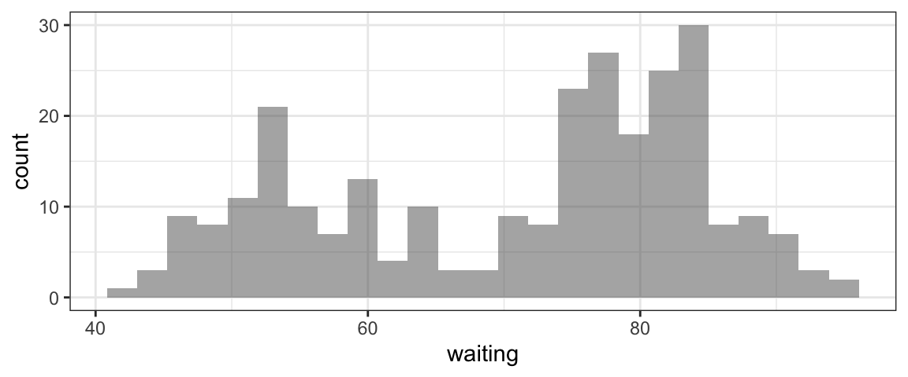

Data
The goal of this tutorial is to demonstrate how to create a simple Shiny App (web dashboard/interactive web app created in RStudio) that lets users explore a dataset.
Through most of this tutorial, you’ll be using the dataset faithful which is built in to R. However, for your Project 1 app, you’ll need to use a different dataset. And…you’ll need to figure out how to read that data into R within your app and get it ready to use.
As an example, we’ll use the student survey dataset some students created recently in class. This will allow us to demonstrate a few somewhat optional, but quite useful, R coding skills before we start actually working on our app:
- Reading in a dataset from a Google Sheet
- “Tidy”ing a messy dataset
Reading data from Google Sheets
There are several ways to read data from Google Sheets.
The most reliable, but not the easiest, is: Export the sheet as a .csv file, upload the file to the RStudio server, and then read in the data from the local file. Pretty foolproof, but a bit of an annoying process.
Here is a simple way to read data directly from Google which usually works well. Be warned - sometimes strange errors crop up when you try to do this - don’t hesitate to ask for help if needed.
Setup: Make the sheet public as a .csv
Before you can read in the data file, make it public online two ways. In Google Sheets,
- Click the “Share” button on the upper right and make sure the document is shared so that “anyone with the link can [view, comment, or edit]”.

- Go to the “File” menu on the upper left and select “Publish to the web…”

In the pop-up window that appears, opt to publish the current sheet as a comma-separated values (.csv) file. Copy the resulting URL (highlighted in blue in the image).

- Optional: If you want a shorter URL, you can go to <goo.gl> (or another link shortener) to do so. I did that and got the short URL: https://goo.gl/C7qnbQ
Reading in Google Sheets Web CSV
Once you have the link to the published CSV file (which is not the same as the “sharing” link to edit the sheet, or the URL you see in your browser when editing the sheet), you can read in the file directly in RStudio using read.csv().
In this case, we want to treat blank cells as missing data; we can tell R this by including the input na.strings=c('') to read.csv(). This tells R to treat an empty cell as an “NA” (missing datapoint).
DPiD <- read.csv('https://goo.gl/C7qnbQ',
na.strings = c(''))
head(DPiD)Tidying a Categorical Variable
We now have data! But some of it is a mess. For example, let’s take a quick look at the Year variable:
Argh! Students adopted 3 spellings of “senior”, 3 of “sophomore”, and 4 of “junior”. We can fix this using function fct_recode from package forcats. Its inputs are a factor (categorical) variable, then a set of inputs of the form old_value = "new_value".
Here, we’re also using the $ syntax, where dataset_name$variable_name isolates just one variable from a dataset.
DPiD <- DPiD %>%
mutate(Year= fct_recode(Year,
senior="Sr.",
senior='SR',
senior='Sr',
sophomore='Sophomore',
sophomore='sophomore',
sophomore='soph',
junior='Junior',
junior='Jr.',
junior='JR',
junior='Jr')
)
gf_bar(~Year, data = DPiD) %>%
gf_refine(coord_flip())
Your Turn!
Use plots to find another variable that needs this kind of fix, and fix it.
Note: In the tutorial environment, any new variables you create, or fixes you implement, will be valid only within the single code pane you are working in. If you want to save your work and keep a “clean” version of the DPiD dataset, you may want to go to RStudio and work in an Rmd document instead of here in the tutorial.
Shiny App from Template
One way to quickly create a very simple shiny app is to start with the basic template built in to R Studio.
In the “New File” menu (Paper icon with plus sign in green circle) on the upper left, choose “Shiny Web App…”

In the resulting pop-up window, you have several choices to make:

Name your App
You can choose a name for your app (keep it short, without any space or special characters).
One file or two?
You can also choose between a one-file (app.R) or two-file (ui.R and server.R) setup. The “ui” (user interface) part of an app defines the setup and structure of the app, while the “server” part processes data and creates the actual content. These two parts can either be stored in the same, single file (which is always called app.R) or in two files (always called ui.R and server.R). Whether you choose one file or two, they will be stored in a folder with the same name as the name you choose for your app. Note: the rest of the tutorial will assume that you chose a single-file app.R app.
Viewing Your App Locally
Once you have clicked “Create” to initialize and save your app file(s), you can click the “Run App” button in the upper right corner of the file to preview the app.

Your Turn…
Try running the template app without making any edits to preview what it looks like.
Deploying your App
Deploy your app online to Calvin’s rsconnect server.
After “running the app” locally, click on the “Publish” button on the upper right of the live app.
Follow instructions in the popup to deploy it to our server.
The server URL is https://rsconnect.calvin.edu:3939 and you log in with your Calvin username and password.
(Contact me if you run into any problems).
Customizing your App
Next, let’s think about making some modifications to the app.
Reading in Data
The template app uses the faithful dataset, which is built in to base R. For your own app, you will want to use another dataset. For easiest results, the data file must be hosted online or stored in the app’s folder.
To read in a data file for use in your app, just include the R code to read in the file near the beginning of the file (after the library() command(s) on line 10). So, if you wanted to use the DPiD student survey data, starting at line 10, your file would look like:
library(shiny)
#read in data
DPiD <- read.csv('https://goo.gl/C7qnbQ')
# Define UI for application that draws a histogram
ui <- fluidPage(
...Note: in R code, any line preceded by # is a comment (explanatory text that is not executed by R).
(Of course, if you are really going to use the DPiD data, you will also need to include more lines of code to “tidy” up the dataset as discussed earlier.)
Allowing the user to upload data
If you are trying to create an app that makes a “reproducible report,” you may want it to be possible for the user to upload a data file (and then have the app make figures and tables from the data in the file).
When to use this technique
This will really only work well if the format of the data file stays the same over time, but new data are added as time goes by. If the variable names, etc. are not consistent with a file you already have, this won’t work very well. But if you do know the form the data will have (what variables are included in the dataset, what the variable names are, etc.), read on!
fileInput() function - basic example
You will use the fileInput() function to allow the user to upload a file. There is a bit of help for this function online.
Here is a small example. If you put the code below in an app.R file, it will create a very simple app that allows the user to upload a file, then displays the contents on the screen.
ui <- fluidPage(
sidebarLayout(
sidebarPanel(
fileInput("file1", "Choose CSV File",
accept = c(
"text/csv",
"text/comma-separated-values,text/plain",
".csv")
),
tags$hr(),
checkboxInput("header", "Header", TRUE)
),
mainPanel(
tableOutput("contents")
)
)
)
server <- function(input, output) {
output$contents <- renderTable({
# input$file1 will be NULL initially. After the user selects
# and uploads a file, it will be a data frame with 'name',
# 'size', 'type', and 'datapath' columns. The 'datapath'
# column will contain the local filenames where the data can
# be found.
inFile <- input$file1
if (is.null(inFile))
return(NULL)
read.csv(inFile$datapath, header = input$header)
})
}
# Run the application
shinyApp(ui = ui, server = server)In your own app, you probably want to display figures and tables created from the file, rather than just displaying the contents to the screen. For example, if you place the code below in an app.R file, it tries to make a histogram of the first column of data from whichever file the user uploads. (Note, in your app, you should refer to variables by theirs name, which hopefully you know in advance, so you won’t have to bother with extracting the “names” from the dataset…here, I have no idea what file you might upload, so I tried to make it relatively flexible. If you know the variable names, then you don’t have to mess with the names() and as.formula() nonsense in your code.)
library(shiny)
ui <- fluidPage(
sidebarLayout(
sidebarPanel(
fileInput("file1", "Choose CSV File",
accept = c(
"text/csv",
"text/comma-separated-values,text/plain",
".csv")
),
tags$hr(),
checkboxInput("header", "Header", TRUE)
),
mainPanel(
plotOutput("histogram")
)
)
)
server <- function(input, output) {
output$histogram <- renderPlot({
# input$file1 will be NULL initially. After the user selects
# and uploads a file, it will be a data frame with 'name',
# 'size', 'type', and 'datapath' columns. The 'datapath'
# column will contain the local filenames where the data can
# be found.
inFile <- input$file1
if (is.null(inFile))
return(NULL)
dat <- read.csv(inFile$datapath, header = input$header)
vars <- names(dat)
ggformula::gf_histogram(as.formula(paste("~", vars[2])), data=dat)
})
}
# Run the application
shinyApp(ui = ui, server = server)Downloading Graphics
You may wish to allow a user to export a figure file as an image.
This example is based on https://stackoverflow.com/questions/14810409/save-plots-made-in-a-shiny-app.
It still has a flaw: when the user saves the file, they need to add the file extension ‘.png’ manually or the file won’t be readable.
This example is a work in progress and should be updated to:
- Allow user to select the format in which to save the file (PDF, jpeg, png, etc.)
- Correct the above-mentioned issue with the file extension.
#
# This is a Shiny web application. You can run the application by clicking
# the 'Run App' button above.
#
# Find out more about building applications with Shiny here:
#
# http://shiny.rstudio.com/
#
library(shiny)
ui <- fluidPage(
sidebarLayout(
sidebarPanel(
fileInput("file1", "Choose CSV File",
accept = c(
"text/csv",
"text/comma-separated-values,text/plain",
".csv")
),
tags$hr(),
checkboxInput("header", "Header", TRUE),
downloadButton('downloadFigA')
),
mainPanel(
plotOutput("histogram")
)
)
)
server <- function(input, output) {
# creating the plot
# input$file1 will be NULL initially. After the user selects
# and uploads a file, it will be a data frame with 'name',
# 'size', 'type', and 'datapath' columns. The 'datapath'
# column will contain the local filenames where the data can
# be found.
plotA <- reactive({
inFile <- input$file1
if (is.null(inFile))
return(NULL)
dat <- read.csv(inFile$datapath, header = input$header)
vars <- names(dat)
FA <- ggformula::gf_histogram(as.formula(paste("~", vars[2])), data=dat)
})
# displaying the plot on screen
output$histogram <- renderPlot({
print(plotA())
})
# downloading the plot
output$downloadFigA <- downloadHandler(
filename = 'saved_plot.png' ,
content = function(file) {
ggplot2::ggsave(file, plot = plotA(), device = "png")
}
)
}
# Run the application
shinyApp(ui = ui, server = server)Editing the Plot
The plot in the template app is a histogram created with “base R” graphics. How would we change it to a similar histogram, but using our function gf_histogram() from the ggformula package?
The code that makes the plot is found at lines 38-45 of the app.R file:
output$distPlot <- renderPlot({
# generate bins based on input$bins from ui.R
x <- faithful[, 2]
bins <- seq(min(x), max(x), length.out = input$bins + 1)
# draw the histogram with the specified number of bins
hist(x, breaks = bins, col = 'darkgray', border = 'white')
})This code uses the shiny function renderPlot() to make a plot object to display in the app. All code inside the renderPlot() parentheses should work together to finally produce the plot of interest.
All objects (like plots) to be displayed in your app should be stored as objects with names of the form output$object_name. This groups them together into a list of objects called output, from and the server part of your app.R file specifies how to display them in the end. You can choose the object names, but you can’t change the name of output or shiny won’t know where to find your stuff.
Now, how can we alter the plot to use gf_histogram()? We know the dataset is called faithful. What variables does it contain?
head(faithful)The plot in the template app shows the waiting variable, which gives the duration in seconds between sequential eruptions of the Old Faithful geyser in Yellowstone Park.
Our histogram, with gf_histogram()
To simply make a histogram of the variable waiting, you would use:
gf_histogram(~waiting, data=faithful)
Actually using the user-specified number of bins
However, we don’t want to show that histogram in the app; we want to show a histogram where the number of bins in the histogram is controlled by the user’s positioning of the slider.
The current position of the slider is stored in the object input$bins, which gives the user-desired number of bins.
gf_histogram() accepts the input bins = n where \(n\) is the desired number of bins…so all we have to do is plug in input$bins:
gf_histogram(~waiting, data=faithful, bins= input$bins)Replace all the code at lines 40-44 of the template app.R file with the gf_histogram() call above, and preview the app again to see if you’ve succeeded!
Note: if you added code at the top of your file to read in a dataset, the exact line numbers may be a bit larger than 40-44. You should be replacing all the code within the renderPlot({}) call.
Editing Sliders
What if you want to make some changes to the slider input that controls the number of bins? For example, you might want to change the prompt the user sees, or the minimum and maximum numbers of bins the user can select.
The code that defines the slider is found in the server part of the file, at lines 21-25 of the app.R file:
sliderInput("bins",
"Number of bins:",
min = 1,
max = 50,
value = 30)Try changing the prompt (currently it’s “Number of bins:”), or the min, max, and value numbers, and see what happens by previewing the resulting app.
Tables
What if you want to display a table in your app, instead of (or in addition to) figures?
First, we have to construct a table to display. One common way to do this is by summarise()ing variables in our dataset. For example, there is a dataset built in to R called mtcars that gives some data about different models of cars. Some of the variables are mpg (fuel efficiency), cyl (how many cylinders the engine has), hp (horsepower), and wt (weight in tons). The code below will group the cars in the dataset by cyl (so all the 4 cylinder cars are one group, the 6 cylinders another group, and the 8 cylinders another), then compute the mean mpg, hp, and wt for each group (and also report the number of cars in each group, n()).
my_table <- mtcars %>%
mutate(Cylinders = factor(cyl)) %>%
group_by(Cylinders) %>%
summarise(`Mean MPG` = mean(mpg),
`Mean Horsepower` = mean(hp),
`Mean Weight` = mean(wt),
n = n()) ## `summarise()` ungrouping output (override with `.groups` argument)my_tablekable tables
OK, that’s our table, but we want to display it in a prettier way. The package knitr has a function kable() that makes a data frame in to a pretty html table:
my_table <- mtcars %>%
mutate(Cylinders = factor(cyl)) %>%
group_by(Cylinders) %>%
summarise(`Mean MPG` = mean(mpg),
`Mean Horsepower` = mean(hp),
`Mean Weight` = mean(wt),
n = n()) ## `summarise()` ungrouping output (override with `.groups` argument)my_table %>% knitr::kable()| Cylinders | Mean MPG | Mean Horsepower | Mean Weight | n |
|---|---|---|---|---|
| 4 | 26.66364 | 82.63636 | 2.285727 | 11 |
| 6 | 19.74286 | 122.28571 | 3.117143 | 7 |
| 8 | 15.10000 | 209.21429 | 3.999214 | 14 |
Customizing kable tables
If you need more options for formatting and customization, check out the companion package kableExtra - references online at: https://cran.r-project.org/web/packages/kableExtra/vignettes/awesome_table_in_html.html
pander tables
There is another function pander(), from package pander, that can print out almost anything “nicely”, but you don’t have as much control and customization. For example, you can use pander() to print out a summary of a regression model nicely:
| Estimate | Std. Error | t value | Pr(>|t|) | |
|---|---|---|---|---|
| (Intercept) | 54.07 | 86.09 | 0.628 | 0.5349 |
| cyl | 23.98 | 7.346 | 3.264 | 0.002815 |
| mpg | -2.775 | 2.177 | -1.275 | 0.2125 |
Getting a table into your app
The similar table output can be displayed easily in your app using the ui function tableOutput() or, for an interactive table, dataTableOutput().
First, create the table in the server part of your app; a simple example is below. Notice we are now using tableOutput() (which is specific for shiny apps) instead of kable() or pander() to make the table.
server <- function(input, output) {
#this is the same table created earlier as an example
output$mtcars_kable <- renderDataTable(
mtcars %>%
mutate(Cylinders = factor(cyl)) %>%
group_by(Cylinders) %>%
summarise(`Mean MPG` = mean(mpg),
`Mean Horsepower` = mean(hp),
`Mean Weight` = mean(wt),
n = n())
)
}Then, add a tableOutput() to the ui part of your app to display your table, for example if you had a simple app with JUST this table it might look like:
ui <- fluidPage(
# Application title
titlePanel("mtcars"),
mainPanel(
dataTableOutput("mtcars_kable")
)
)Adding a Theme
The package shinythemes lets you easily customize the color scheme of your app.
At the top of your app.R file, be sure to include the command
require(shinythemes)Then, within the fluidPage() function, add an input of the form theme = "theme_name",, but replace theme_name with the name of the theme you want. To see all the options, check out https://shiny.rstudio.com/gallery/shiny-theme-selector.html.
For example, to use the theme “cerulean”, you would include the following as (part of) your app.R file:
ui <- fluidPage(
theme = "cerulean",
# Application title
titlePanel("The Name of My App"),
... #(more inputs go here)
)
...Learn More
For your first project, the goal is to create a simple, working app, not to learn everything there is to know about coding shiny apps! My advice is to start very simple and get something that works, and then slowly add features from there.
As you did this tutorial, you probably felt confused by some of the R code, which is quite a lot more complicated that what you have seen so far…But we’ve only scratched the surface of the possibilities here…
If you’re a beginner at programming and R, don’t worry about all the details and keep things as simple as you can. Your Project 1 app might be pretty much like the one you made in this tutorial, but using a different dataset instead of faithful.
If you are great at R coding or just into coding in general, this is your chance to explore and experiment. Include more options, different plot types, fancy layouts…the sky’s the limit. Some resources for you are below - or you can always consult Prof DR with “How can I…” questions!
To learn more ways to customize and format your app, you may consult:
- Shiny tutorials from RStudio, https://shiny.rstudio.com/tutorial/. The RStudio tutorials give a more detailed and comprehensive introduction to shiny than this tutorial does.
- An online gallery of shiny apps, https://shiny.rstudio.com/gallery/. These examples show you some of what is possible with shiny, and you can view the source code for them and copy/modify it to use in your own work.